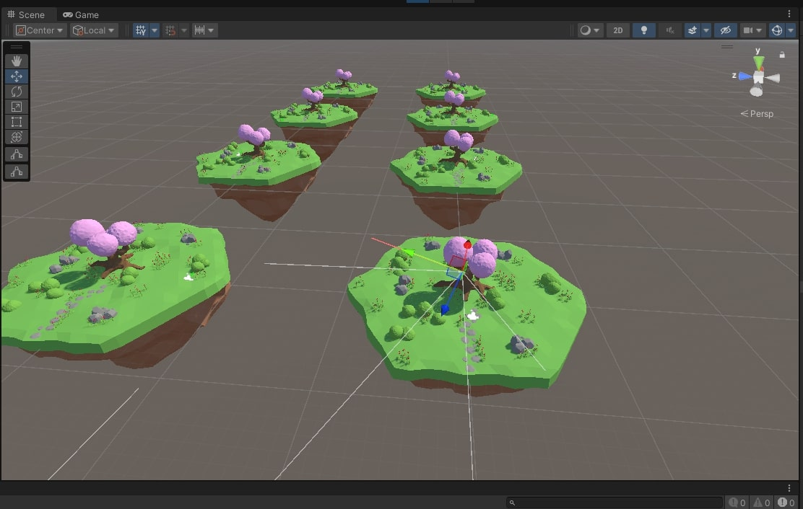

01 The environment

A Unity environment where the hummingbird navigates to collect nectar. The agent observes its own position and orientation in 3D plus a vector from the tip of its beak to the nearest flower's nectar hitbox. The baseline is purely extrinsic: reward arrives only when the beak lands inside the hitbox, and never before.